2021/10/17 – 2021/10/23，一個人，一隻狗，一台wowow檔車開啟了我人生第一趟摩托車環島旅行。
第一天：板橋 - 台中
天氣陰陰，想說中部會比較溫暖，只穿短袖配牛仔外套就出發了，到了桃園新竹風越來越強，車子還會被吹歪，超可怕，好險幾乎沒車。就在這時候發現摩托車機油公里數快到了，居然忘記昨天要先去換，趕快找一家機車行去換機油，好險他星期日也有開，鬆了一口氣呢！
帶著路上車友們的加油聲和狂風吹來吹去終於到了台中高美濕地，才發現這裡的風才是真的大！
| 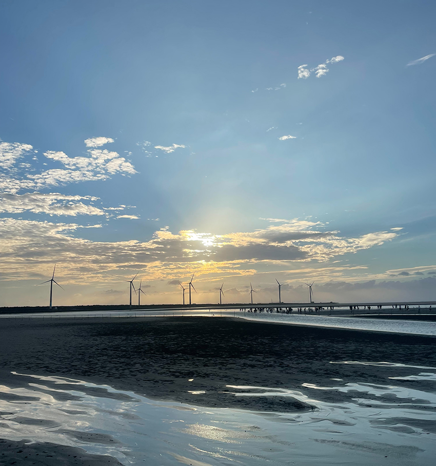 |
棧道上大家都縮成一團的走，還遇到柴柴，卻很疑惑為甚麼牠被抱著？後來懂了因為風實在太大，只有10公斤的狗狗們快被吹走了阿！尾巴還歪一邊。 最後，我也把我的狗狗抱了起來。
隨著太陽漸漸落下，我們前往今日的住宿旅館，房間位於一中街上，騎了一整天屁股真的有點痛，要來好好休息。吃完晚餐，估狗已經累翻，呼呼大睡了……
| 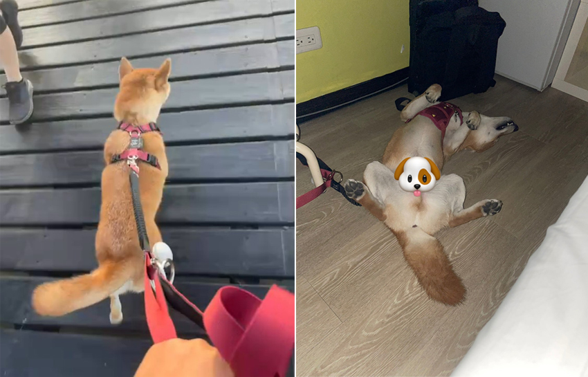 |
第二天：台中 – 台南
天氣晴，一大早帶估狗去台中公園散步之後，開始往南部前進，一路上又有更多路人對估狗很好奇：牠好乖喔！你們在環島嗎？會不會跳下來啊！可以拍照嗎？
其實事前在家附近都已經有訓練牠，載牠到處走走，基本上是不會跳車的唷！而且這一趟路途較遠，我還加裝安全帶從後面拉住，所以是非常安全的！
比想像中快地來到了第一個景點！雲林虎尾糖廠鐵橋，它是日治時期運送甘蔗的橋，後來交通更加發達而荒廢，後來又加以整理變成觀光景點。鐵橋好美、好壯觀，算是一條步道可以走過去，可惜它的路面是鐵網，狗狗不敢走，只好再次抱起來。
| 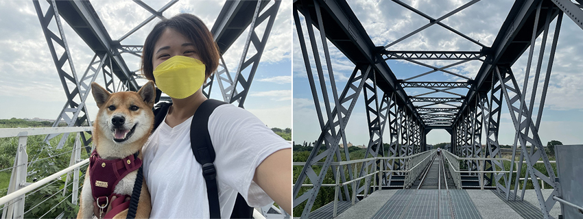 |
接著來到了第二個景點：嘉義布袋港 - 吃鮮蚵，這一家之前就有來吃過非常大一盤，只要100元，不過這次來得時機不是盛產期，肉比較小，不過味道還是蠻好的，推薦！(*補充 : 蚵仔盛產期為4月 - 9月)
| 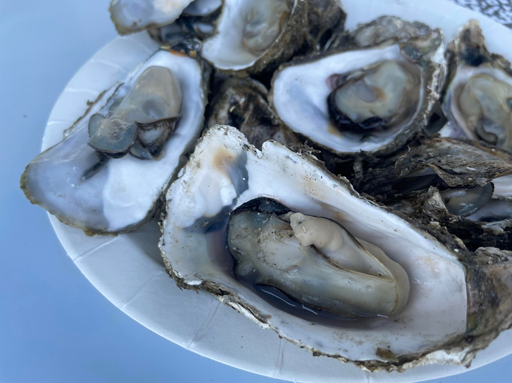 |
再來的第三個景點 : 水晶教堂，門票20元/寵物可以進入。教堂真的好美，玻璃建築、陽光和水面的反射，好美呀！中南部朋友拍婚紗可以來耶！
| 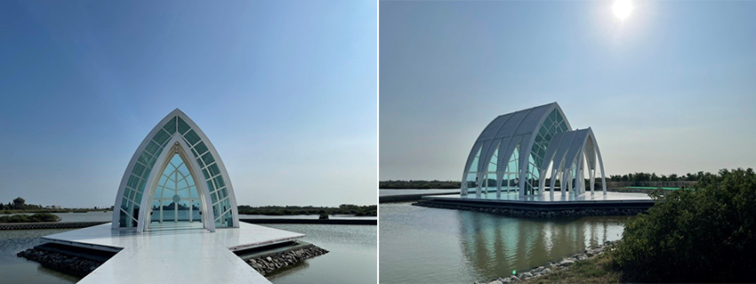 |
這天的最後一個景點，也是第四個景點 : 國華街，不能吃牛肉的我，來台南必吃鱔魚炒麵呀！吃了很多家覺得還是國華街裡的福昇小食最好吃，酸酸辣辣的配上鱔魚有點脆脆的口感，真的很好吃。今天房間採用無接觸自助入房，格局很大，白牆搭配木頭的簡約風格，讓人覺得很輕鬆，下次來台南可以再來住。
10/19第三天：台南 – 墾丁
每次來到南部，早餐都會去找當地粉漿蛋餅，厚厚的蛋餅超級古早味的，這次也不例外。很巧的是這頓早餐還認識隔壁桌的客人，他們是台南人也有養柴柴(小花)，互相加了IG，下次來台南可以來找他們玩。
阿公阿婆蛋餅，想說接下來要殺去墾丁吃飽一點，點了大份的，結果超級飽，好吃但如果有辣椒醬油就更好了，還多點一份不加調味料的荷包蛋給估狗，牠非常喜歡吃雞蛋。
| 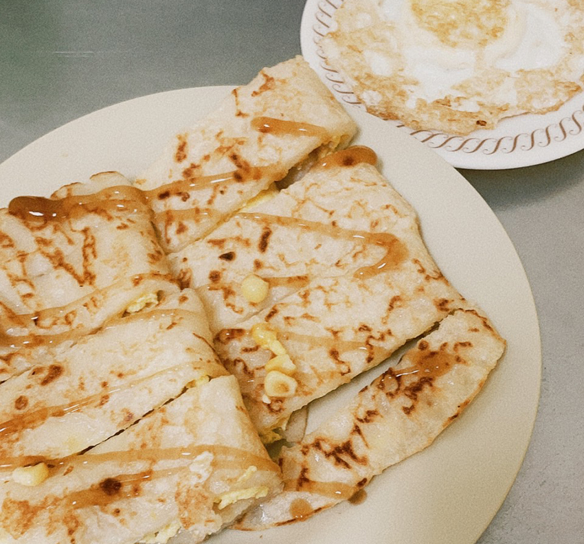 |
中途停靠高雄駁二特區後，往墾丁前進，抵達墾丁時已經接近傍晚，天空有點烏雲，先去旅館給估狗休息吧！晚餐在墾丁大街上買了許多小吃，東山鴨頭、地瓜球、烤魷魚，還有每次看到都很好奇怎麼吃的燒酒螺，一大杯100元，吃得有點空虛，肉小小的，但味道還不錯，可惜份量實在太多最後沒吃完。
第四天：墾丁 – 台東
天氣晴，起了個大早，帶估狗去南灣散步，沙灘上沒什麼人，微微的陽光，吹著海風，走在沙灘上，好舒服，還遇上其他主人帶狗狗出來散步，一大片沙灘好想放繩讓估狗去跟狗狗玩，不過在陌生的地方又是獨自一人實在害怕叫不回來。
| 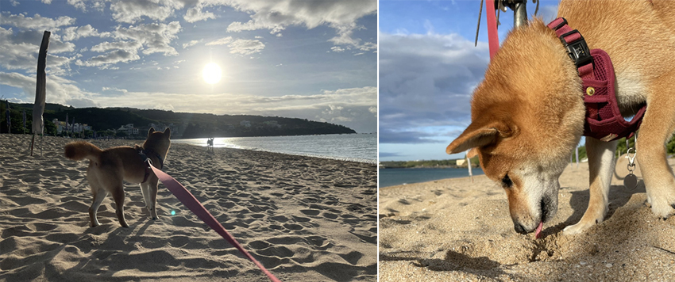 |
這一天要前往台東，南迴公路上比我想像中安全很多，汽車和機車、自行車是分開走的，公路上也都還有便利商店可以休息，蠻好走的。一出南迴的山路後，真的讓我很驚豔，一大片的海洋就在眼前，趕快找個地方停一下拍照留念。中午停靠在多良車站，裡面有賣原住民的一些料理和果汁，我們就在這休息一下。
| 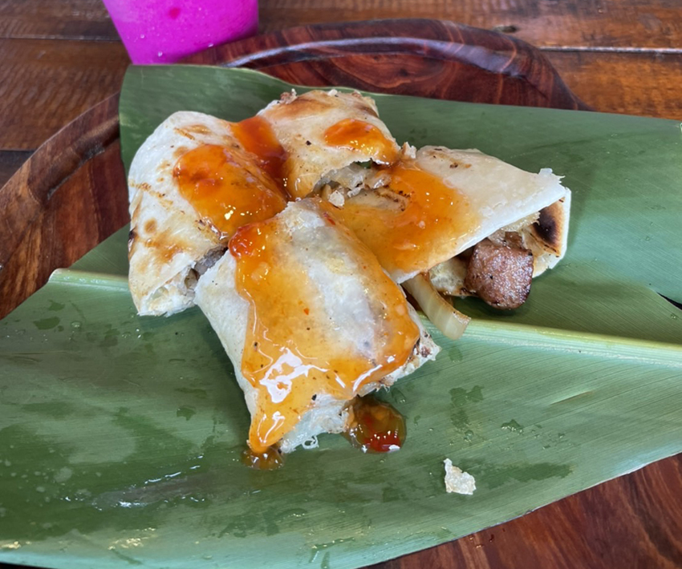 |
前往台東市區路上開始毛毛雨，然後越往市區雨越大，雨大到我的車居然開始催不了油門，快熄火，好險之前在台北也是有遇過只要找個地方休息一下就好了。晚餐在台東鐵花村解決，鐵花村是一個音樂市集，幾乎每天都有音樂表演，旁邊還有一棟文創商店，吃飽還可以去逛逛。
| 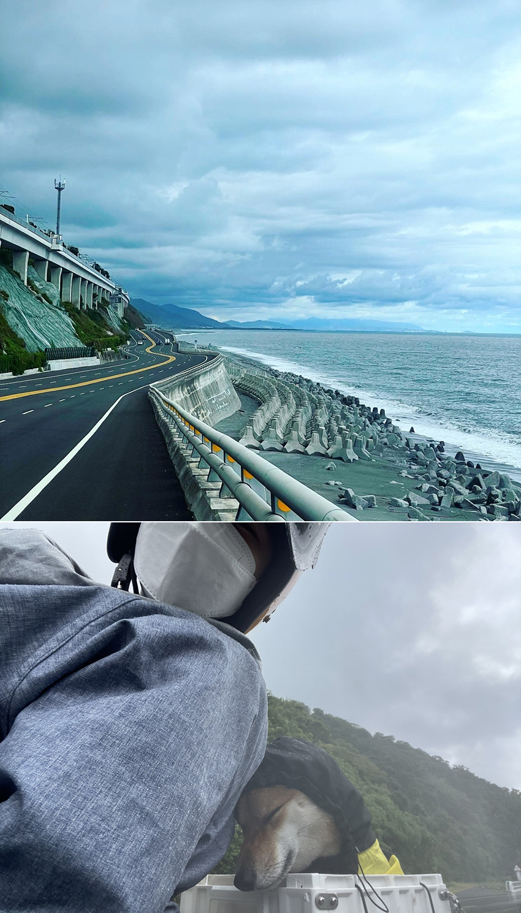 |
第五天：台東 – 花蓮
天氣晴，順著海岸線慢慢地騎去花蓮，經過八仙洞、北迴歸線地標，默默地到了花蓮才想起來三仙台呢? 我怎麼沒看到他的指標，可惜錯過了！這幾天估狗都超乖，晚餐給他加料獎勵他一下。而我的晚餐也獎勵一下自己，生魚片大餐，尤其是那干貝，有點貴但真的好甜好好吃。
| 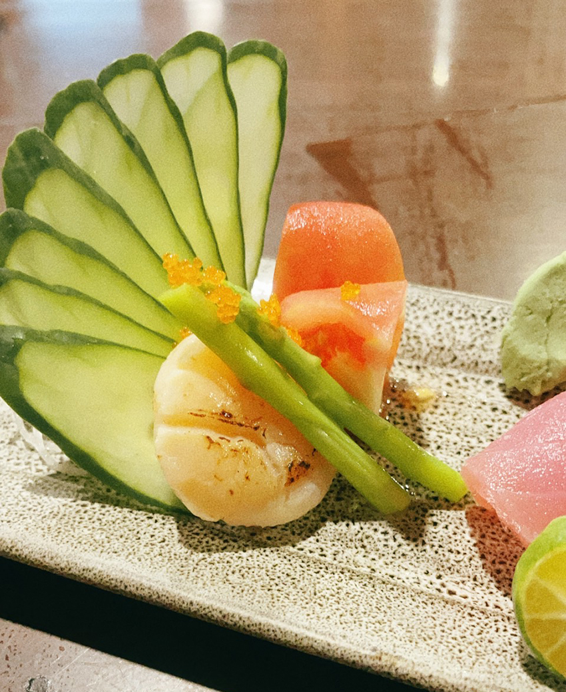 |
花蓮算是我們家還蠻常來的旅遊景點，這一次就沒有做甚麼停留，簡單看風景休息為主。氣象說東北季風南下，東部會有局部性降雨，看來明日要趕快回家了……
| 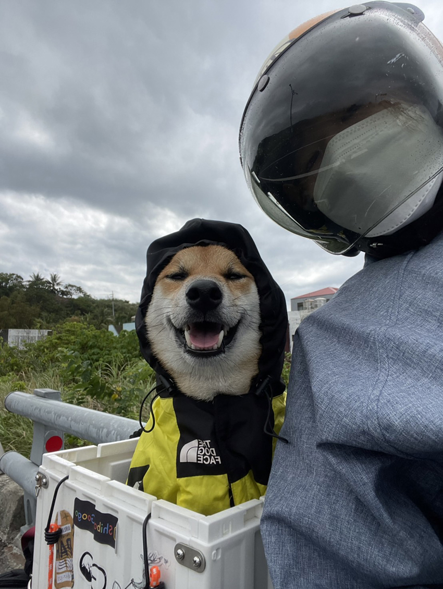 |
第六天：花蓮 – 宜蘭
天氣陰，因為花蓮離台北似乎沒有到非常遠，這一天的住宿我也就沒有訂，抱著今天要衝回台北的心情一大早我們繼續出發。
蘇花公路 : 第一次騎車走蘇花，想起以前開車走蘇花我總是暈到不行，騎車舒服很多，沒想到在蘇花末端，又開始下雨而且好冷，我自己是還可以，但這雨量估狗穿雨衣已經不夠，他的箱子感覺會積水，拿出出發前購買的兒童雨衣將整個箱子罩住只露出一顆頭，有點可憐又好笑。然後車子又不行了，跟昨日一樣快熄火，不過這次在山裡，沒有地方停靠，只好慢慢繼續往宜蘭前進。
終於，從蘇花下山了，停一家便利商店趕快把估狗擦乾，買罐頭溫一下給牠補充一下，好擔心牠會感冒，看這個雨下成這樣，看來今天是回不去台北了。
就近找了一家民宿，房東非常友善，房間非常乾淨整齊而且好漂亮，客廳、廚房都可以公用，好希望我也有這樣的家啊！ 最後因為實在太冷，衣服褲子都濕掉，安頓好估狗之後，我騎著車去市區買衣服。
心裡也糾結著這雨一直下，明天要騎車嗎? 還是去坐火車？還是要求助宜蘭的朋友……
| 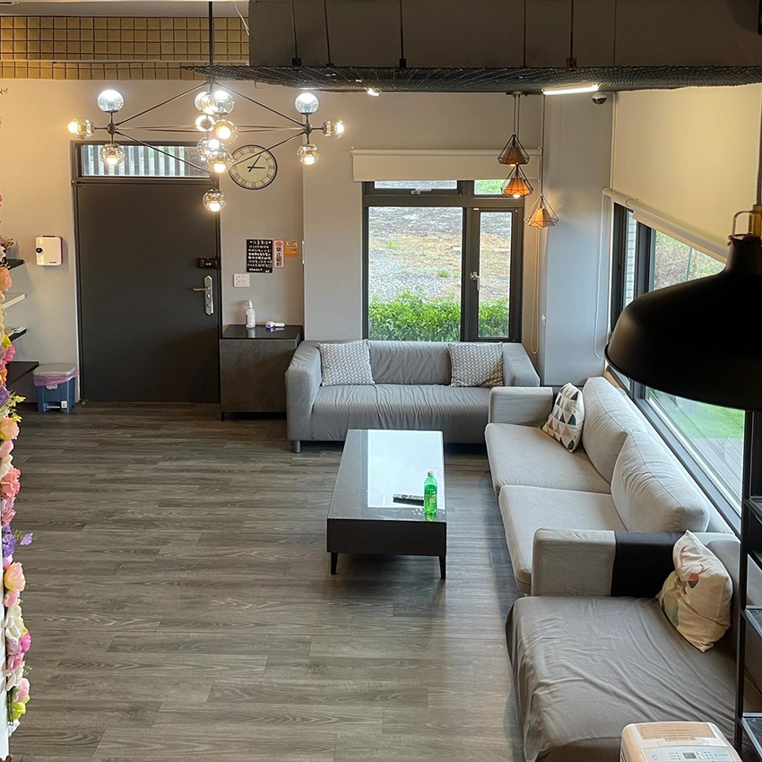 |
第七天：宜蘭 – 台北
天氣陰，清晨一看雨停了，天空的雲也不再厚重，收拾好行李，不到七點踏上回家的路程，北宜公路上很順都沒車，還可以看到整個宜蘭市區，晚上來夜景一定很美。就這樣順順的帶點毛毛雨，八點到坪林，九點就到台北了，回家的感覺真好。開心的是估狗也沒有暈車，回家後馬上就去玩牠的玩具，然後呼呼大睡。
| 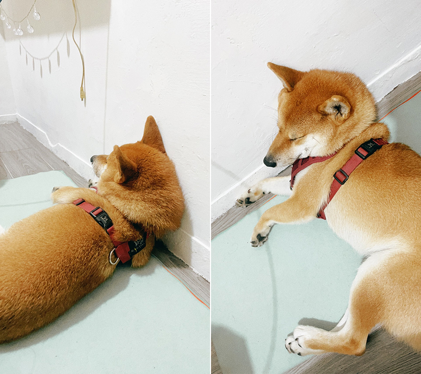 |
第一次自己一個人的旅行，帶著種種的不確定、忐忑的心情就這樣出發了。從一開始騎車的不適，慢慢調整到舒適的騎車，從害怕陌生人搭訕到可以跟路人閒聊，不再擔心別人眼光，學習與自己獨處，自由的感覺真好。 環島成功！
| 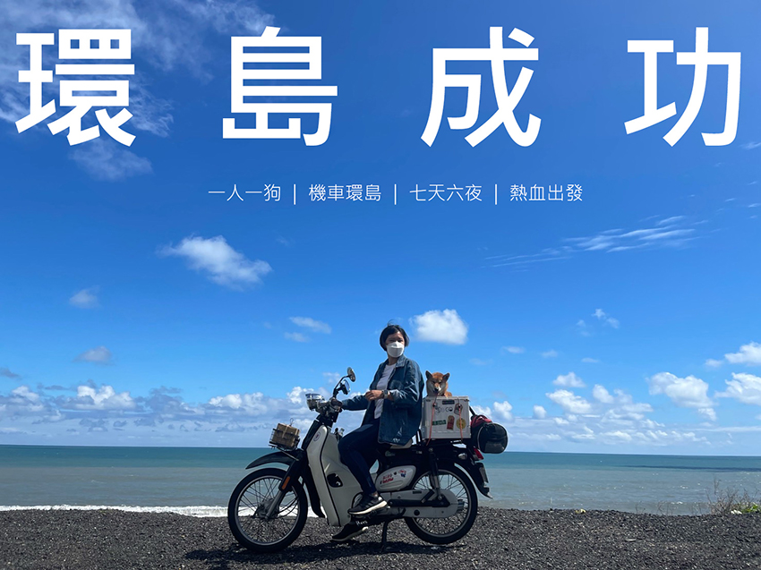 |